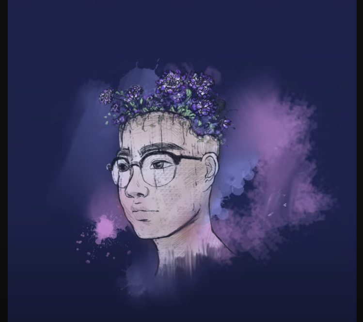

F#m B
I can't stop feeling like none of this matters, I
[Verse 1]
F#m7
Fool around, tell me words
B7 Cdim
That you don't mean
C#m7
I'm already numb to it
Emaj7
I'm already numb to it
F#m7 B7 Cdim
Feed me lies, tear me up, break me down
C#m7
I don't wanna be playin' these games
[Pre-Chorus]
A
I'm already used to it
Am B7
I'm already used to you being this cold
[Chorus]
E F#m7 B7
But keepin' you close shouldn't be hard
E C#m
If you were honest when you said you missed me
F#m7
You've played with my pride
B7 Amaj7 Emaj7 C#m7
Making me feel like we had something real
[Verse 2]
F#m7 B7 Cdim
I know we've been over this, it's nothing new
C#m7 Emaj7
You're still gonna be leaving me here
F#m7 B7 Cdim
It's easier hating you than missing you
C#m7 Emaj7
But I don't wanna be feelin' this way
[Pre-Chorus]
A
I'm already through with it
Am B7
I'm already tired of thinking at all
[Chorus]
E F#m7 B7
But keepin' you close shouldn't be hard
E C#m
If you were honest when you said you missed me
F#m7
You've played with my pride
B7 Emaj7 C#m7
Making me feel like we had something real
E F#m7 B7
And making you stay shouldn't feel wrong
E C#m
This is the last time I'll ask you to listen
F#m7
I've played all my cards
B7 Amaj7 Emaj7
Would you feel a thing if you saw me right now?
[Bridge]
Amaj7
No matter what I say to you
Emaj7 Amaj7
You're gone (I've been tryin' in vain to hold on)
Caug
No matter what I say
[Chorus]
E F#m7 B7
But keepin' you close shouldn't be hard
E C#m
If you were honest when you said you missed me
F#m7
You've played with my pride
B7 Emaj7 C#m7
Making me feel like we had something real
E F#m7 B7
And making you stay shouldn't feel wrong
E C#m
This is the last time I'll ask you to listen
F#m7
I've played all my cards
B7 Amaj7 Emaj7
Would you feel a thing if you saw me right now?